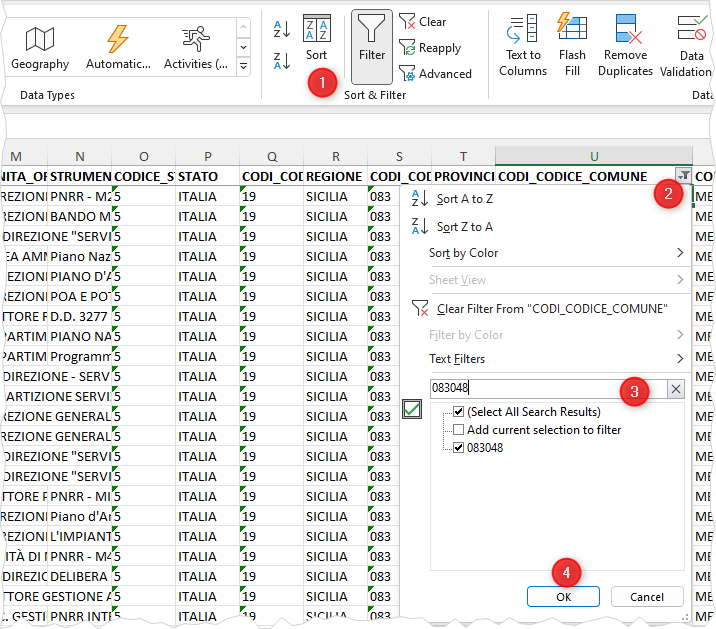
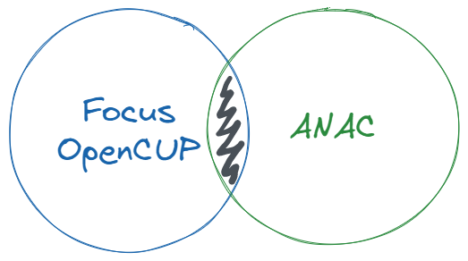
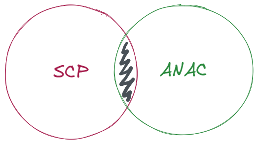

In output il file anac-cup-cig-083048.csv (separatore di campo la ,):
- numero di record pari 84 (esclusa la riga di intestazione);
- numero di codici CUP univoci 42;
- numero di codici CIG univoci 60.
Un esempio a partire dai dati del Comune di Messina
L’associazione onData è stata coinvolta nella Scuola di Monitoraggio Civico del PNRR di Messina, organizzata dall’Osservatorio Civico PNRR in collaborazione con Parliament Watch Italia. Per quell’occasione è stata raccontato il flusso di lavoro e sono stati resi disponibili i dati di esempio.
Nota bene: in questo esempio non si fa riferimento ai dati ReGiS, perché al momento della sua stesura questa fonte era inesistente.
In questa pagina verrà sviluppato un esempio completo, per estrarre le informazioni sul PNRR legate al Comune di Messina, a partire dalle fonti dati descritte in questa guida: OpenCUP, ANAC, SCP e OpenBDAP.
I dati “focus PNRR”, hanno una colonna che contiene il codice Istat dei Comuni italiani associati ai vari progetti. Quello del Comune di Messina è 083048.
Il file di partenza è in formato Excel: per estrarre soltanto i dati di Messina, si cerca la colonna CODI_CODICE_COMUNE, si applica il filtro per il valore 083048 (vedi Figura 1), si copiano e incollano i risultati in un nuovo foglio elettronico e si salva il file.
Come formato di output, si sceglie CSV (delimitato da virgola) (*.csv). È il file opencup-focus-083048.csv.
Sono circa 360 progetti.

E a partire da questo file estratto, è utile per i prossimi step, salvare in CSV anche un file contenente la sola colonna con i valori univoci di codici CUP.
Con un foglio elettronico si può fare un semplice copia e incolla in un nuovo foglio della sola prima colonna e salvare il tutto in CSV.
In output il file opencup-focus-083048-cup.csv.
È comodo farlo con Miller:
mlr --csv cut -f CODICE_CUP then uniq -a opencup-focus-083048.csv >opencup-focus-083048-cup.csvCon cut -f CODICE_CUP si taglia la sola colonna CODICE_CUP e con uniq -a si estraggono i soli valori univoci.
Il dataset CUP pubblicato dall’Autorità Nazionale Anticorruzione è composto da più di 3 milioni di record, quindi con è “lavorabile” con un foglio elettronico (troppe righe).
È necessario utilizzare un linguaggio di programmazione o delle utility dedicate alla elaborazione di file di testo strutturato (CSV, TSV, JSON, ecc.).
Il file di riferimento ha soltanto le colonne CIG e CUP.
| CIG | CUP |
|---|---|
| 5462644C6C | I81C11000040006 |
| 009893079C | 000000000000000 |
| ZBB02E5426 | H81J09002660007 |
Quindi, a partire dai CUP associati al Comune di Messina estratti sopra, bisogna estrarre dai dati ANAC soltanto le righe con i codici CUP corrispondenti. I due dataset si devono incrociare tra loro (si definisce JOIN1), usando al la coincidenza tra i CUP come filtro.

JOIN), sfruttando la coincidenza dei CUPPer farlo si può usare il comodo ed efficiente qsv, a partire dai file opencup-focus-083048-cup.csv (che contiene i soli codici CUP del Comune di Messina) e cup_csv.csv (che è il file di ANAC):
qsv searchset -d ";" -i -s CUP opencup-focus-083048-cup.csv cup_csv.csv >anac-cup-cig-083048.csvAlcune note sul comando:
-d ";" per impostare il separatore di campo che nel cup_csv.csv di ANAC è ;-i, per fare una ricerca che non tenga conto di “maiuscole” e “miniscole”;-s CUP, per definire la colonna su cui eseguire la ricerca dei CUP;opencup-focus-083048-cup.csv e quello da cui verranno estratti i file.In output il file anac-cup-cig-083048.csv (separatore di campo la ,):
A partire dal file estratto è utile estrarre anche un file CSV con i soli codici CIG univoci.
Per questo esempio è stato creato il file anac-cup-cig-083048-cig.csv.
Si può usare Miller.
mlr --c2n cut -f CIG then uniq -a anac-cup-cig-083048.csv >anac-cup-cig-083048-cig.csvcut -f CIG, per estrarre soltanto la colonna CIG;then uniq -a, per rimuovere eventuali doppioni.Questo file è comodo per interrogare le API di ANAC, ed estrarre le informazioni relative a questi codici CIG estratti per Messina.
Questa è un’operazione semplice, ma richiede alcune conoscenze di programmazione. Qui sotto, al click, un esempio di codice.
È uno script bash basato su Miller e su flatterer.
# variabile con il percorso assoluto della cartella dello script
folder="$(cd "$(dirname "${BASH_SOURCE[0]}")" && pwd)"
# crea le cartelle di output
mkdir -p "$folder"/rawdata/cig
mkdir -p "$folder"/cig
# per ogni CIG estratto, interroga l'API di ANAC e salva il file jsonl
while IFS="" read -r line; do
if [ ! -f "$folder"/rawdata/cig/"$line".jsonl ]; then
curl -kL "https://api.anticorruzione.it/apicig/1.0.0/getSmartCig/$line" >"$folder"/rawdata/cig/"$line".jsonl
fi
done <"$folder"/anac-cup-cig-083048-cig.csv
# unisci tutti i file jsonl in un unico file json
if [ ! -f "$folder"/anac-cig.json ]; then
mlr --ijsonl --ojson --no-jvstack cat "$folder"/rawdata/cig/*.jsonl >"$folder"/anac-cig.json
fi
# estrai dal file JSON, le tabelle in esseo contenute in formato CSV
flatterer --force "$folder"/anac-cig.json "$folder"/cigIn output diversi file CSV con le informazioni relative ai codici CIG estratti per Messina:
anac-cig.csv, è il file principale più ricco, con le informazioni principali;bando_CUP.csv, contiene i CUP correlati ai vari CIG;incaricati.csv, contiene i nomi delle persone incaricate;bando_CPV.csv, contiene i codici CPV - ovvero la categorizzazione del tipo di “oggetto” in gara - correlati ai vari CIG.Per estrarre i dati relativi a Messina e al PNRR dalla Banca Dati SCP, si possono usare i codici CIG presenti nel file anac-cup-cig-083048-cig.csv estratto sopra.

JOIN), sfruttando la coincidenza dei CIGQui sotto ad esempio i comandi necessari per estrarre i dati dai file atti, esiti e bandi, contenuti nella Banca Dati SCP.
In output:
scp-atti-083048.csv, contiene i dati relativi agli atti;scp-bandi-083048.csv, contiene i dati relativi ai bandi;scp-esiti-083048.csv, contiene i dati relativi agli esiti (ma, al 17 febbraio 2023, non ci sono dati sugli esiti per Messina).OpenBDAP è un’altra fonte informativa nazionale sui contratti pubblici. Come indicato nella sezione dedicata, è possibile fare delle ricerche per codice CUP, inserendo un elenco di CUP (non più di 300 per volta).
Quindi ancora una volta si possono usare i codici CUP estratti per il Comune di Messina, ovvero quelli del file opencup-focus-083048-cup.csv e usarli come filtro per la ricerca su OpenBDAP. Sono circa 360, quindi si dovranno eseguire 2 ricerche.
In output questo file XLSX, suddiviso in 3 fogli: Dettaglio CUP, Dettaglio CIG e Dettaglio Indicatori. Qui i dati estratti al 5 febbraio 2023: openbdap-083048.xlsx.
In questo foglio elettronico tutti gli output estratti (fanno riferimento a quanto disponibile a inizio febbraio del 2023).
Aprendolo si può avere un’idea di quali tipi di informazioni è possibile estrarre da queste fonti.

Se vuoi fare delle proposte su questo vademecum, se vuoi raccontarci come l’hai usato, se hai bisogno di aiuto in merito, ecco come fare.